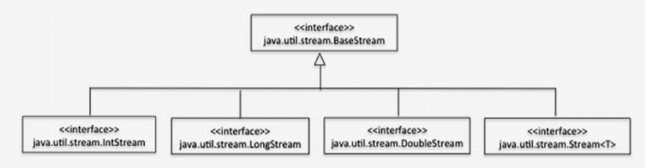
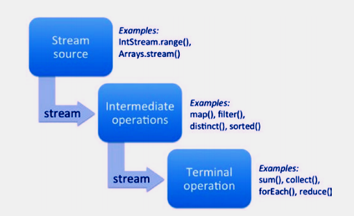

JAVA SE 8
Generics e Coleções
Objetivos
- Criar e uar uma classe genérica
- Criar e usar ArrayList, TreeSet, TreeMAp, e objeto ArrayDeque
- Usar java.util.Comparator e java.lang.Comparable interfaces Coleçoes Streams e Filtros
- Iteragir usndo métodos forEach de Streams e List
- Descrever interface Stream e pipeline Stream
- Filtrar uma coleção usando expressoes lambda
- Usar rferencia de métodos com Streams
Cada aplicativo Java não trivial faz uso de estruturas de dados e algoritmos. O framework da coleção Java fornece um grande conjunto de estruturas de dados e algoritmos de uso geral prontamente utilizáveis. Essas estruturas de dados e algoritmos podem ser usados com qualquer tipo de dados adequado de uma maneira segura para o tipo; isso é conseguido através do uso de um recurso de linguagem conhecido como genéricas.
Coleções em java implemena estruturas de dados e algoritmos e são implementadas usando funções genéricas e lambda.Neste capítulo, começamos discutindo as genéricas. Uma vez que nossa experiência mostra que muitas vezes é difícil responder corretamente a perguntas sobre genéricas, abordamos as genéricas em detalhes. Em seguida, discutimos coleções importantes e também discutimos java.lang.Comparator e java.lang.Comparable interfaces. Finalmente, abordamos em detalhes como as funções e fluxos lambda podem ser usados na estrutura de coleções Java.
Todos os códigos apresentado estão no reposítorio do github e poderão ser acessado através do link no final da página.
Criando e Usando Classes Genericas
As genéricas são um recurso de linguagem apresentado ao Java na versão 1.5. Antes das genéricas serem introduzidos em Java, a classe base Object era usada como alternativa as genéricas. Com genéricas, você escreve código para um tipo (digamos T) que é aplicável para todos os tipos, em vez de escrever classes separadas para cada tipo. Vamos começar com um exemplo simples.
Suponha que você queira imprimir o valor do objeto entre colchetes. Por exemplo, para imprimir um objeto Integer com valor 10, em vez de imprimir “10” no console, você deseja imprimir o valor dentro de uma “caixa” como esta: “[10]”.
// Este programa mostra a implementação do contêiner nos. Genéricos
class BoxPrinter<T> {
private T val;
public BoxPrinter(T arg) {
val = arg;
}
public String toString() {
return "[" + val + "]";
}
}
class BoxPrinterTest {
public static void main(String []args) {
BoxPrinter<Integer> value1 = new BoxPrinter<Integer>(new Integer(10));
System.out.println(value1);
BoxPrinter<String> value2 = new BoxPrinter<String>("Hello world");
System.out.println(value2);
}
}
Este código imprime o seguinte:
[10] [Hello world]
Existe muitas coisas que é preciso destacar.
1- Veja a declaração do BoxPriner:
class BoxPrinter<T>
Você dar a classe BoxPrinter um tipo placeholder<T> - o tipo nome T dentro do bracelets "<" e ">" segue o nome da classe. Você pode usar este tipo dentro da classe para indicar que ele é um placeholder(espaço reservado) para o tipo atual fornecer mais tarde.
2- Dentro da classe primeiro usa T na declação do campo:
private T val;
Você pode declarar val do tipo generico - o tipo atual será especificado mais tarde quando você usar BoxPrinter. Em main() você declara variável do tipo BoxPrinter para um Integer como isto:
BoxPrinter<Integer> value1
Aqui você especifica que T é do tipo Inteiro - identificando T (um placeholder) é substituído com o tipo Integer. Assim, o val dentro de BoxPrinter torna Integer porque T é substituído por Integer.
3- Agora, Aqui é outro lugar onde usa T:
public BoxPrinter(T arg) {
val = arg;
}
Semelhante à declaração de val com tipo T, você está dizendo que o argumento para o construtor BoxPrinter é do tipo T. Posteriormente no método main(), quando o construtor é chamado por new, você especifica que T é do tipo Integer:
new BoxPrinter<Integer>(new Integer(10));
Agora, dentro do construtor BoxPrinter, arg e val devem ser do mesmo tipo, pois ambos são do tipo T. Por exemplo, se você alterar o construtor da seguinte forma:
new BoxPrinter<String>(new Integer(10));
O BoxPrinter é do tipo String, e o argumento transmitido é do tipo Integer, então você receberá um erro de compilador para incompatibilidade de tipos ao usar os genéricos (o que é bom porque você encontrará o problema anteriormente).
Vamos considerar outro exemplo. Aqui está uma classe genérica Pair que pode conter objetos de dois tipos diferentes, T1 e T2.
// Demonstra o uso de genéricos na definição de classes
class Pair<T1, T2> {
T1 object1;
T2 object2;
Pair(T1 one, T2 two) {
object1 = one;
object2 = two;
}
public T1 getFirst() {
return object1;
}
public T2 getSecond() {
return object2;
}
}
class PairTest {
public static void main(String []args) {
Pair<Integer, String> worldCup = new Pair<Integer, String>(2018, "Russia");
System.out.println("World cup " + worldCup.getFirst() +
" in " + worldCup.getSecond());
}
}
Este programa imprime o seguinte:
World cup 2018 in Russia
Aqui T1 e T2 são de tipo holders. Você dá esses tipos de placeholders dentro de colchetes angulares: < T1, T2 >.
Ao usar a classe Pair, você deve especificar quais tipos específicos você usará no lugar de T1 e T2.Por exemplo, você usa Integer e String para Pair, como em Pair<Integer, String> no método main(). Agora, pense na classe Pair como se ela tivesse esse corpo:
// como Pair<Integer, String> pode ser tratado internamente
class Pair {
Integer object1;
String object2;
Pair(Integer one, String two) {
object1 = one;
object2 = two;
}
public Integer getFirst() {
return object1;
}
public String getSecond() {
return object2;
}
}
Em outras palavras, tente manualmente fazer um localizar e substituir os tipos de placeholders e substituí-los por tipos reais no código. Isso ajudará você a entender como os genéricos realmente funcionam. Com isso, você pode entender como os métodos getFirst() e getSecond() retornam valores Integer e String no método main().
Na declaração:
Pair<Integer, String> worldCup = new Pair<Integer, String>(2018, "Russia");
Note que os tipos correspondem exatamente. Se você tentar:
Pair<Integer, String> worldCup = new Pair<String, String>(2018, "Russia");
Você receberá o seguinte erro do compilador:
TestPair.java:20: cannot find symbol symbol : constructor Pair(int,java.lang.String) location: class Pair<java.lang.String,java.lang.String>
Agora, que tal tentar essa declaração?
Pair<Integer, String> worldCup = new Pair<Number, String>(2018, "Russia");
Você receberá outro erro do compilador devido à incompatibilidade de tipos no tipo declarado de worldCup e ao tipo fornecido na expressão de inicialização:
TestPair.java:20: incompatible types found : Pair<java.lang.Number,java.lang.String> required: Pair<java.lang.Integer,java.lang.String>
Agora modifique a classe Pair genérica. Pair<T1, T2> armazena objetos do tipo T1 e T2. Como é uma classe de par genérica que leva um tipo T e armazena dois objetos desse tipo T? Obviamente, uma maneira de fazer isso é instanciar Pair<T1, T2> com o mesmo tipo, digamos Pair<String, String>, mas não é uma boa solução. Por quê? Não há como garantir que você está instanciando o par com os mesmos tipos! O exemplo a seguir é uma versão modificada do par, vamos chamá-lo de PairOfT, que usa o tipo de espaço reservado para o tipo T.
// Este programa mostra como usar genéricos em seus programas
class PairOfT<T> {
T object1;
T object2;
PairOfT(T one, T two) {
object1 = one;
object2 = two;
}
public T getFirst() {
return object1;
}
public T getSecond() {
return object2;
}
}
Agora, esta declaração funcionará?
PairOfT<Integer, String> worldCup = new PairOfT<Integer, String>(2018, "Russia");
Não, porque o PairOf T usa um parâmetro de tipo e você deu dois parâmetros de tipo aqui. Então, você receberá um erro do compilador. Então, que tal esta declaração?
PairOfT<String> worldCup = new PairOfT<String>(2018, "Russia");
Não, você ainda receberá um erro do compilador:
TestPair.java:20: cannot find symbol symbol : constructor PairOfT(int,java.lang.String) location: class PairOfT<java.lang.String> PairOfT<String> worldCup = new PairOfT<String>(2018, "Russia");
A razão é que 2018 - quando em caixa - é um Integer, e você deve dar um String como argumento.
Como é esta declaração?
PairOfT<String> worldCup = new PairOfT<String>("2018", "Russia");
Sim, agora compila e funcina bem!
Sintax Diamond
Veja como é tedioso garantir que você forneça parâmetros do mesmo tipo tanto no tipo de declaração (Pair<Integer, String> neste caso) quanto na nova expressão de criação de objeto (new Pair <String, String>() neste caso) Para simplificar sua vida, o Java 1.7 introduziu a sintaxe de diamante, na qual os parâmetros de tipo podem ser omitidos: você pode simplesmente deixá-lo ao compilador para inferir os tipos da declaração de tipo. Assim, a declaração pode ser simplificada como:
Pair<Integer, String> worldCup = new Pair<>(2018, "Russia");
A seguir o programa completo fazendo uso desta sintaxe de diamante.
// Este programa mostra o uso da sintaxe de diamante ao usar genéricos
class Pair<T1, T2> {
T1 object1;
T2 object2;
Pair(T1 one, T2 two) {
object1 = one;
object2 = two;
}
public T1 getFirst() {
return object1;
}
public T2 getSecond() {
return object2;
}
}
class TestPair {
public static void main(String []args) {
Pair<Integer, String> worldCup = new Pair<>(2018, "Russia");
System.out.println("World cup " + worldCup.getFirst() +
" in " + worldCup.getSecond());
}
Este programa irá imprimir o seguinte:
World cup 2018 in Russia
Note que é um erro comum esquecer o operador diamante <> na expressão de inicialização, como em:
Pair<Integer, String> worldCup = new Pair(2018, "Russia");
Aqui estão os avisos que você obterá do compilador (quando você passar a opção de linha de comando -Xlint: unchecked to javac):
Pair.java:19: warning: [unchecked] unchecked call to Pair(T1,T2) as a member of the raw type Pair Pair<Integer, String> worldCup = new Pair(2018, "Russia"); ^ where T1,T2 are type-variables: T1 extends Object declared in class Pair T2 extends Object declared in class Pair Pair.java:19: warning: [unchecked] unchecked conversion Pair<Integer, String> worldCup = new Pair(2018, "Russia"); ^ required: Pair<Integer,String> found: Pair 2 warnings
Como Pair é um tipo genérico e você esqueceu de usar o <> ou fornecer os parâmetros de tipo explicitamente, o compilador o trata como um tipo bruto com Pair usando dois parâmetros de tipo Object. Embora esse comportamento não tenha causado nenhum problema nesse segmento de código específico, ele é perigoso e pode causar bugs, como mostra a próxima seção.
Interoperabilidade de tipos brutos e tipos genéricos
Um tipo genérico pode ser usado sem especificar seu tipo associado. Nesse caso, o tipo é referido como tipo bruto. Por exemplo, List<T> deve ser usado junto com um tipo associado, ou seja, List<String>; no entanto, ele pode ser usado sem especificar o tipo acompanhado, ou seja, apenas List. Neste último caso, List é referida como tipo bruto.
Quando você usa um tipo bruto, perde a vantagem da segurança de tipo oferecida pelos genéricos. Por exemplo, o tipo Vector é um tipo bruto. Tipos brutos ignoram a verificação de tipo em tempo de compilação; no entanto, eles podem lançar exceções de tempo de execução (por exemplo, ClassCastException). Portanto, não é recomendável usar tipos brutos no novo código.
//RawTest1.java
import java.util.List;
import java.util.LinkedList;
import java.util.Iterator;
class RawTest1 {
public static void main(String []args) {
List list = new LinkedList();
list.add("First");
list.add("Second");
List<String> strList = list; //#1
for(Iterator<String> itemItr = strList.iterator(); itemItr.hasNext();)
System.out.println("Item: " + itemItr.next());
List<String> strList2 = new LinkedList<>();
strList2.add("First");
strList2.add("Second");
List list2 = strList2; //#2
for(Iterator<String> itemItr = list2.iterator(); itemItr.hasNext();)
System.out.println("Item: " + itemItr.next());
}
}
O que você espera do programa acima? Você acha que irá compilar / executar corretamente? Bem, sim - irá compilar (com avisos) e executar sem nenhum problema. Imprime o seguinte:
Item: First Item: Second Item: First Item: Second
O exemplo a seguir introduz algumas alterações; observe a saída:
//RawTest2.java
import java.util.List;
import java.util.LinkedList;
import java.util.Iterator;
class RawTest2 {
public static void main(String []args) {
List list = new LinkedList();
list.add("First");
list.add("Second");
List<String> strList = list;
strList.add(10); // #1: gera erro no compilador
for(Iterator<String> itemItr = strList.iterator(); itemItr.hasNext();)
System.out.println("Item : " + itemItr.next());
List<String> strList2 = new LinkedList<>();
strList2.add("First");
strList2.add("Second");
List list2 = strList2;
list2.add(10); // #2: compiles fine, results in runtime exception
for(Iterator<String> itemItr = list2.iterator(); itemItr.hasNext();)
System.out.println("Item : " + itemItr.next());
}
}
No exemplo aacima você adcionou duas declarações. A primeira declaração é a seguinte:
strList.add(10); // #1: gera erro no compilador
Você está tentando adicionar um item inteiro em uma lista de tipo List <String>, para obter um erro em tempo de compilação "nenhum método adequado encontrado para add(int)". Como discutido anteriormente, esse tipo de verificação no nível do compilador é bom, pois, sem ela, uma exceção de tempo de execução pode ter resultado posteriormente. Aqui está a segunda declaração que você adicionou:
list2.add(10); // #2: compila bem, resulta em runtime exception
Aqui, a list2 linked-list (tipo bruto) é inicializada com um tipo genérico List<>. Após a inicialização, você adicionou um número inteiro ao tipo bruto da lista. Isso é permitido, pois list2 é um tipo bruto. No entanto, isso resultará em um ClassCastException.
A lição que aprendemos com este exemplo é evitar misturar tipos brutos e tipos genéricos em nossos programas, pois isso pode resultar em um comportamento errôneo em tempo de execução. Se você precisar usar ambos em um programa, certifique-se de adicionar um único tipo de item nos contêineres e recuperar usando o mesmo tipo.
Métodos Genericos
Semelhante às classes genéricas, você pode criar métodos genéricos, isto é, métodos que usam tipos de parâmetros genéricos. Métodos genéricos são úteis para escrever métodos que são aplicáveis a uma ampla gama de tipos, enquanto a funcionalidade permanece a mesma. Por exemplo, existem vários métodos genéricos na classe java.util.Collections.
Vamos implementar um método simples chamado fill(). Dado um contêiner, o método fill() preenche todos os elementos contêineres com valor val. O exemplo a seguir contém a implementação do método fill() na classe Utilities.
//UtilitiesTest.java
// Este programa demonstra métodos genericos
import java.util.List;
import java.util.ArrayList;
class Utilities {
public static<T> void fill(List<T> list, T val) {
for(int i = 0; i < list.size(); i++)
list.set(i, val);
}
}
class UtilitiesTest {
public static void main(String []args) {
List<Integer> intList = new ArrayList<Integer>();
intList.add(10);
intList.add(20);
System.out.println("The original list is: " + intList);
Utilities.fill(intList, 100);
System.out.println("The list after calling Utilities.fill() is: " + intList);
}
}
Este programa imprime o seguinte:
The original list is: [10, 20] The list after calling Utilities.fill() is: [100, 100]
Vamos olhar passo por passo este código:
1- Você cria um método nomeado fill() na classe Utilities com esta declaração:
public static<T> void fill(List<T> list, T val)
Você declara o parâmetro de tipo genérico T neste método. Após os qualificadores public e static, você coloca <T> e depois o segue por tipo de retorno, nome do método e seus parâmetros. Esta declaração é diferente das classes genéricas - você fornece os parâmetros de tipo genérico após o nome da classe em classes genéricas.
No corpo, você escreve o código como se fosse um método normal.
for(int i = 0; i < list.size(); i++) list.set(i, val);
Você percorre a lista de 0 até seu tamanho e configura cada um dos elementos para valor val em cada iteração. Você usa o método set() em List, que assume a posição do índice no contêiner como o primeiro argumento e o valor real a ser definido como o segundo argumento.
3-No método main() na classe UtilitiesTest, é assim que você chama o método fill():
Utilities.fill(intList, 100);
Observe que você não forneceu explicitamente o valor do parâmetro de tipo genérico. Como int List é do tipo Integer e 100 é digitado como Integer, o compilador inferiu que o tipo T no método fill() é do tipo Integer.
Genéricos e Subtipagem
Você pode atribuir um objeto de tipo derivado à sua referência de tipo base; isso é o que você quer dizer com subtipagem. No entanto, para genéricos, os parâmetros de tipo devem corresponder exatamente; caso contrário, você receberá um erro do compilador. Em outras palavras, a subtipagem não funciona para parâmetros genéricos. Sim, essa é uma regra difícil de lembrar, por isso vamos discutir com mais detalhes por que a subtipagem não funciona para os parâmetros de tipo genérico.
Vejamos o que pode dar errado se você assumir que pode usar subtipagem para parâmetros de tipo genérico.
// código ilegal - suponha que a seguinte inicialização seja permitida List<Number> intList = new ArrayList<Integer>(); intList.add(new Integer(10)); // okay intList.add(new Float(10.0f)); // oops!
O tipo intList de List<Number> deve conter um Objeto ArrayList<Number>. No entanto, você está armazenando um ArrayList<Integer>. Isso parece razoável, pois List estende ArrayList e Integer estende Number. No entanto, você pode acabar inserindo um valor Float no intList! Lembre-se de que o tipo dinâmico de intList é o tipo ArrayList<Integer> - portanto, você está violando a segurança do tipo aqui (e, portanto, obterá o erro do compilador de tipos incompatíveis). Como os genéricos são projetados para evitar erros de segurança de tipo como este, você não pode atribuir um parâmetro de tipo genérico derivado a um parâmetro de tipo de base.
Como você pode ver, a subtipagem de tipos de parâmetro genéricos não é permitida porque não é segura, mas ainda assim é uma limitação inconveniente. Felizmente, o Java suporta tipos de parâmetros curingas nos quais você pode usar subtipagem. Vamos explorar essa capacidade agora.
Parâmetros Coringas
Você viu na seção anterior que a subtipagem não funciona para parâmetros de tipo genérico. Assim,
List<Number> intList = new ArrayList<Integer>();
Dá um erro de compilador:
WildCardUse.java:6: incompatible types found : java.util.ArrayList<java.lang.Integer> required: java.util.List<java.lang.Number> List<Number> numList = new ArrayList<Integer>();
Se você alterar um pouco a declaração para usar o parâmetro curinga, ele irá compilar:
List<?> wildCardList = new ArrayList<Integer>();
O que significa um curinga? Assim como o curinga que você usa para substituir qualquer carta em um jogo de cartas, você pode usar um curinga para indicar que ele pode corresponder a qualquer tipo. Com List<?>, você quer dizer que é uma lista de qualquer tipo - em outras palavras, você pode dizer que é uma "lista de incógnitas!". Mas espere um minuto ... quando você quer um tipo indicando "qualquer tipo", você usa a classe Object, não é? Como é a mesma declaração, mas usando o parâmetro de tipo de objeto?
List<Object> numList = new ArrayList<Integer>();
Sem sorte - você tem o mesmo erro que você obteve acima usando List<Number>!
WildCardUse.java:6: incompatible types found : java.util.ArrayList<java.lang.Integer> required: java.util.List<java.lang.Object> List<Object> numList = new ArrayList<Integer>();
Em outras palavras, você ainda está tentando usar a subtipagem para parâmetros genéricos, e ainda não funciona. Como você pode ver, List<Object> não é o mesmo que List<?>. De fato, List<?> é um supertipo de qualquer tipo de List, o que significa que você pode passar List<Integer>, ou List<String>, ou mesmo List<Object> onde List<?> é esperado.
Vamos usar o curinga em um exemplo e ver se ele funcionará :
// Este programa demonstra o uso de parâmetros curinga
import java.util.List;
import java.util.ArrayList;
class WildCardUse {
static void printList(List<?> list){
for(Object element: list)
System.out.println("[" + element + "]");
}
public static void main(String []args) {
List<Integer> list = new ArrayList<>();
list.add(10);
list.add(100);
printList(list);
List<String> strList = new ArrayList<>();
strList.add("10");
strList.add("100");
printList(strList);
}
}
Este programa imprime o seguinte:
[10] [100] [10] [100]
Funciona, e a lista usando curinga pode ser passada na lista de números inteiros, bem como na lista de (Strings)seqüências de caracteres. Isso acontece por causa do tipo de parâmetro do método printList() - List< ? >.
Limitação de Coringas
Vamos considerar o seguinte trecho, que tenta adicionar um elemento e imprimir a lista:
List<?> wildCardList = new ArrayList<Integer>(); wildCardList.add(new Integer(10)); System.out.println(wildCardList);
Você receberá o seguinte erro:
WildCardUse.java:7: cannot find symbol symbol : method add(java.lang.Integer) location: interface java.util.List<capture#145 of ? extends java.lang.Number> wildCardList.add(new Integer(10));
Por quê? Você tem certeza absoluta de que o método add() existe na interface List. Então, por que o compilador não encontra o método?
O problema requer alguma explicação detalhada. Quando você usa o tipo curinga<?>, Você diz ao compilador que está ignorando as informações de tipo, então <?> significa tipo desconhecido. Toda vez que você tenta passar argumentos para um tipo genérico, o compilador java tenta inferir o tipo do argumento passado, bem como o tipo dos genéricos e para justificar o tipo de segurança. Agora, você está tentando usar o método add() para inserir um elemento na lista. Como wildCardList não sabe qual tipo de objeto ele contém, é arriscado adicionar elementos a ele. Você pode acabar adicionando uma string - "hello", por exemplo - em vez de um valor inteiro. Para evitar esse problema (lembre-se, os genéricos foram introduzidos na linguagem para garantir a segurança dos tipos!), O compilador não permite que você chame métodos que modifiquem o objeto. Como o método add modifica o objeto, você recebe um erro! A mensagem de erro também parece confusa, como em <capture # 145 of? extends java.lang.Number>.
Criando e Usando Classes de Coleção
Criar e usar ArrayList, TreeSet, TreeMap, e objetos ArrayDeque
A biblioteca java tem um framework de coleções que faz uso extensivo de genéricos e fornece uma definiçao de contêiners e algorítimos. Nesta seção focaremos no uso do framework de coleções. Especialemente discutiremos importantes classes de coleção incluindo ArrayList, TreeSet, TreeMap, e objetos ArrayDeque.
O Termo coleção( collection(s)) é um termo genérico, enquanto Collecions e Collection são API's específicos do java.util.package.Collections -- como em java.util.Collections -- é uma classe de utilidade que contém somente métodos estáticos. Em geral coleções (collection) refere-se para um contêiner assim como map, set, stack, e queue. Usaremos o termo contêiners quando referir a esta coleção.
Classes Abstratas e Interface
A hierarquia de tipos na biblioteca java.util consiste em várias classes e interfaces abstratas que fornecem funcionalidade genérica. A Tabela abaixo relaciona alguns tipos importantes nessa hierarquia. Cobriremos alguns desses tipos mais detalhadamente mais adiante nesta seção.
| Classe Abstrata/Interface | Breve Descrição |
|---|---|
| Iterable | A implementação dessa interface pode ser usada para iterar com uma declaração foreach. |
| Collection | Interface base comum para classes na hierarquia de coleções. Quando você quer escrever métodos que são muito gerais, você pode passar a interface Collection. Por exemplo, o método max() em java.util.Collections recebe uma coleção e retorna um objeto. |
| List | Interface base para contêineres que armazenam uma sequência de elementos. Você pode acessar os elementos usando um índice e recuperar o mesmo elemento mais tarde (para manter o pedido de inserção). Você pode armazenar elementos duplicados em uma lista. |
| Set, SortedSet,NavigableSet | Interfaces para contêineres que não permitem elementos duplicados. SortedSet mantém os elementos do conjunto em uma ordem classificada. NavigableSet permite pesquisar o conjunto para as correspondências mais próximas. |
| Queue Dequeue | Queue é uma interface base para contêineres que contém uma seqüência de elementos para processamento. Por exemplo, as classes que implementam o Queue podem ser LIFO (last in, first out (ultimo que entra - primeiro que sai) - como na estrutura de dados da pilha) ou FIFO (first in, first out -(primeiro que entra - primeiro que sai) como na estrutura de dados da fila). Em um Deque você pode inserir ou remover elementos de ambas as extremidades. |
| Map, SortedMap, NavigableMap | Interfaces para contêineres que mapeiam chaves para valores. No SortedMap, as chaves estão em uma ordem classificada. Um NavigableMap permite pesquisar e retornar a correspondência mais próxima para determinados critérios de pesquisa. Observe que a hierarquia de mapas não estende a interface Collection. |
| Iterator, ListIterator | Você pode atravessar o contêiner na direção para frente se uma classe implementar a interface Iterator. Você pode percorrer as direções para frente e para trás se uma classe implementar a interface ListIterator. |
Esses são alguns tipos de base, mas não sejam sobrecarregados por eles. Você verá classes concretas específicas e usará alguns desses tipos de base. Cobriremos apenas a interface Collection e, em seguida, passaremos a abordar as classes concretas específicas que fazem parte dessa hierarquia de coleção.
A interface Collection
A interface Collection fornece métodos como add() e remove() que são comuns a todos os contêineres.
A seguir relacionamos os métodos mais importantes nessa interface.
| Métdos | Breve Descrição |
|---|---|
| boolean add(Element elem) | Adiciona elem no container subjacente. |
| void clear() | Remove todos os elementos do contêiner. |
| boolean isEmpty() | Verifica se o contêiner tem algum elemento ou não. |
| Iterator<Element> iterator() | Retorna um objeto Iterator<Element> para iterar pelo contêiner. |
| boolean remove(Object obj) | Remove o elemento se obj estiver presente no container. |
| int size() | Retorna o número de elementos no container. |
| Object[] toArray() | Retorna um array que possui todos os elementos no container. |
Métodos como add() e remove() podem falhar dependendo do contêiner subjacente. Por exemplo, se o contêiner for somente leitura, você não poderá adicionar ou remover elementos. Além desses métodos, há muitos métodos na interface Collection que se aplicam a vários elementos no contêiner.
| Métodos | Breve Descrição |
|---|---|
| boolean addAll (Collection<? extends Elemen> coll) | Adiciona todos os elementos em coll no Contêiner subjacente. |
| boolean containsAll(Collection<?> coll) | Verifica se todos os elementos dados no coll estão presentes no contêiner subjacente. |
| boolean removeAll (Collection<?> coll) | Remove todos os elementos do contêiner subjacente que também estão presentes em coll. |
| boolean retainAll (Collection<?> coll) | Mantém elementos no contêiner subjacente somente se eles também estiverem presentes em coll; remove todos os outros elementos |
Classes Concretas
Numerosas interfaces e classes abstratas na hierarquia Collection fornecem os métodos comuns que classes concretas específicas implementam/estendem.
A tabela a seguir mostra Classes Concretas importantes.
| Classes Concretas | Breve Descrição |
|---|---|
| ArrayList | internamente é implementado como um array redimensionável. Esta é uma das classes concreta mais utilizadas. Rápido para pesquisar, mas lento para inserir ou excluir. Permite duplicatas. |
| LinkedList | Implementa internamente uma estrutura de dados de lista duplamente vinculada. Rápido para inserir ou excluir elementos, mas lento para pesquisar elementos. Além disso, LinkedListcan pode ser usado quando você precisa de uma estrutura de dados de pilha (LIFO) ou fila (FIFO). Permite duplicatas. |
| HashSet | Internamente implementado como uma estrutura de dados de tabela de hash. Usado para armazenar um conjunto de elementos - não permite armazenar elementos duplicados. Rápido para pesquisar e recuperar elementos. Não mantém qualquer ordem para os elementos armazenados. |
| TreeSet | Implementa internamente uma estrutura de dados de árvore vermelha e preta. Como o HashSet, o TreeSet não permite o armazenamento de duplicatas. No entanto, ao contrário do HashSet, ele armazena os elementos em uma ordem classificada. Ele usa uma estrutura de dados em árvore para decidir onde armazenar ou pesquisar os elementos, e a posição é decidida pela ordem de classificação. |
| HashMap | Internamente implementado como uma estrutura de dados da tabela de hash. Armazena pares de chave e valor. Usa hashing para encontrar um local para pesquisar ou armazenar um par. Pesquisar ou inserir é muito rápido. Não armazena os elementos em qualquer ordem. |
| TreeMap | Implementado internamente usando uma estrutura de dados em árvore vermelho-preto. Ao contrário do HashMap, o TreeMap armazena os elementos em uma ordem classificada. Ele usa uma estrutura de dados em árvore para decidir onde armazenar ou pesquisar chaves, e a posição é decidida pela ordem de classificação. |
| PriorityQueue | Implementado internamente usando a estrutura de dados de heap. Um PriorityQueue é para recuperar elementos com base na prioridade. Independentemente da ordem em que você inserir, quando você remover os elementos, o elemento de prioridade mais alta será recuperado primeiro. |
Classe ArrayList
Listas são usadas para armazenar uma seqüência de elementos. Você pode inserir um elemento do contêiner em uma posição específica usando um índice e recuperar o mesmo elemento posteriormente (isto é, manter a ordem de inserção). Você pode armazenar elementos duplicados em uma lista. Existem duas classes concretas que você precisa saber: ArrayList e LinkedList.
ArrayList implementa um array redimensionável. Quando você cria um array nativo (digamos, new String [10];), o tamanho do array é conhecido (fixo) no momento da criação. No entanto, ArrayList é um array dinâmico: pode crescer em tamanho conforme necessário. Internamente, um ArrayList aloca um bloco de memória e aumenta conforme necessário.
Então, acessar os elementos do array é muito rápido em uma ArrayList. No entanto, quando você adiciona ou remove elementos, internamente, o restante dos elementos é copiado; portanto, a adição / exclusão de elementos é uma operação dispendiosa.
Veja um exemplo simples para visitar elementos em uma ArrayList. Você pega uma ArrayList e usa a construção for-each para percorrer uma coleção:
ArrayList<String> languageList = new ArrayList<>();
languageList.add("C");
languageList.add("C++");
languageList.add("Java");
for(String language : languageList) {
System.out.println(language);
}
O progrma imprime:
C C++ Java
Este for-each é equivalente ao codigo seguinte, que explicitamente usa um Iterator:
for(Iterator<String> languageIter = languageList.iterator(); languageIter.hasNext();) {
String language = languageIter.next();
System.out.println(language);
}
Este segmento de código também imprimirá a mesma saída que o código do loop-for-each anterior . Aqui está uma descrição passo-a-passo de como este loop-for funciona:
1. Você usa o método iterator() para obter o iterador desse contêiner. Como languageList é um ArrayList do tipo <String>, você deve criar Iterator como String. Nome é languageIter.
2. Antes de entrar no loop, você verifica se há algum elemento para visitar. Você chama o método hasNext() para verificar isso. Se retornar verdadeiro, há mais elementos para visitar; se retornar false, a iteração acabou e você sai do loop.
3. Uma vez que você entra no corpo do loop, a primeira coisa que você precisa fazer é chamar next() e mover o iterador. O método next() retorna o valor iterado. Você captura esse valor de retorno na variável language.
4. Você imprime o valor language e, em seguida, o loop continua.
Esse tipo de iteração - a maneira como você chama os métodos iterator(), hasNext() e next() - é importante para aprender; usaremos o loop-for-each ou essa expressão extensivamente em nossos exemplos.
Note que você cria ArrayList<String> e Iterator<String> em vez de apenas usar ArrayList ou Iterator (ou seja, você fornece informações de tipo junto com essas classes). As classes Collection são classes genéricas; portanto, você precisa especificar os parâmetros de tipo para usá-los. Aqui você está armazenando/iterando uma lista de strings, então você usa <String>.
Você pode remover elementos ao percorrer um contêiner usando iteradores. Vamos criar um objeto do tipo ArrayList<Integer> com dez elementos. Você iterará sobre os elementos e removerá todos eles (em vez de usar o método removeAll() em ArrayList).
//TestIterator.java
// Este prograa mostra a utilidade do Iterator
import java.util.ArrayList;
import java.util.Iterator;
class TestIterator {
public static void main(String []args) {
ArrayList<Integer> nums = new ArrayList<Integer>();
for(int i = 1; i < 10; i++)
nums.add(i);
System.out.println("Original list " + nums);
Iterator<Integer> numsIter = nums.iterator();
while(numsIter.hasNext()) {
numsIter.remove();
}
System.out.println("List after removing all elements" + nums);
}
}
Este programa imprime este erro:
Original list [1, 2, 3, 4, 5, 6, 7, 8, 9] Exception in thread "main" java.lang.IllegalStateException at java.util.AbstractList$Itr.remove(AbstractList.java:356) at TestIterator.main(Main.java:12)
O problema é que você não chamou next() antes de chamar remove(). Verificando hasNext() na condição loop-while, movendo o elemento usando next(), e chamando remove() é o tipo correto para remover um elemento. Se você não segui-lo corretamente, poderá ter problemas (por exemplo,você obterá IllegalStateException). Da mesma forma, se você chamar remove() duas vezes sem inserir um next() entre as declarações, receberá essa exceção.
Vamos corrigir este programa chamando next() antes de chamar remove(). Aqui está a parte relevante do código:
Iterator<Integer> numsIter = nums.iterator();
while(numsIter.hasNext()) {
numsIter.next();
numsIter.remove();
}
System.out.println("List after removing all elements " + nums);
Imprime a lista sem elementos, conforme esperado:
List after removing all elements []
Usando Arrays.asList()
A classe java.util.Arrays tem um método útil nomeado método asList() que retorna uma lista de tamanho fixo. Aqui é um interessante aspecto sobre o objeto List retornado : você não pode adcionar ou remover elementos mas você pode modificar o objeto retornado pelo método asList().
//ArrayAsList.java
import java.util.List;
import java.util.Arrays;
class ArrayAsList {
public static void main(String []args) {
Double [] temperatureArray = {31.1, 30.0, 32.5, 34.9, 33.7, 27.8};
System.out.println("The original array is: " + Arrays.toString(temperatureArray));
List<Double> temperatureList = Arrays.asList(temperatureArray);
temperatureList.set(0, 35.2);
System.out.println("The modified array is: " + Arrays.toString(temperatureArray));
}
}
Este código imprime o seguinte:
The original array is: [31.1, 30.0, 32.5, 34.9, 33.7, 27.8] The modified array is: [35.2, 30.0, 32.5, 34.9, 33.7, 27.8]
A classe Arrays fornece apenas funcionalidades limitadas e muitas vezes você vai querer usar métodos na classe Collections. Para conseguir isso, chamar o método Arrays.asList() é uma técnica útil.
A classe TreeSet
Existem duas classes concretas importantes para Set(neste caso pense em set como conjunto ): HashSet e TreeSet. Um HashSet é para inserir e recuperar rapidamente elementos; não mantém nenhuma ordem de classificação para os elementos que contém. Um TreeSet armazena os elementos em uma ordem classificada (e implementa a interface SortedSet).
Dada uma frase, como você pode classificar as letras usadas nessa frase em ordem alfabética? Um TreeSet coloca os valores em uma ordem classificada, para que você possa usar um contêiner TreeSet para resolver esse problema.
import java.util.Set;
import java.util.TreeSet;
class TreeSetTest {
public static void main(String []args) {
String pangram = "the quick brown fox jumps over the lazy dog";
Set<Character> aToZee = new TreeSet<Character>();
for(char gram : pangram.toCharArray())
aToZee.add(gram);
System.out.println("The pangram is: " + pangram);
System.out.print("Sorted pangram characters are: " + aToZee);
}
}
Este imprime assim:
The pangram is: the quick brown fox jumps over the lazy dog Sorted pangram characters are: [ , a, b, c, d, e, f, g, h, i, j, k, l, m, n, o, p, q, r, s, t, u, v, w, x, y, z]
Um pangram é uma frase que usa todas as letras do alfabeto pelo menos uma vez. Você quer armazenar caracteres de um pangram no Set. Como você precisa usar tipos de referência para contêineres, você criou um TreeSet de Characters.
Agora, como obter os caracteres de uma String? Lembre-se de que a indexação de array não funciona para Strings. Por exemplo, para obter o primeiro caractere "t", se você usar o pangram [0] no programa, receberá um erro do compilador.
Felizmente, String possui um método chamado toCharArray() que retorna um char[]. Então, você usa esse método para percorrer a string e obter todos os caracteres. À medida que você adiciona os caracteres no TreeSet, os caracteres são armazenados em uma ordem classificada. Assim, você obtém todas as letras minúsculas quando imprime o set.
Observe na saída que há uma vírgula principal. Por quê? A string de pangram possui muitos caracteres de espaço em branco. Um espaço em branco também é armazenado no set, por isso também é impresso!
A interface Map
Um Mapa armazena pares chave e valor. A interface Map não estende a interface Collection. No entanto, existem métodos na interface Map que você pode usar para obter as classes de objetos que implementam a interface Collection para contornar esse problema. Além disso, os nomes de métodos em Map são muito semelhantes aos métodos em Collection, por isso é fácil entender e usar Map. Existem duas classes concretas importantes de Map: HashMap e TreeMap.
Um HashMap usa uma estrutura de dados da tabela de hash internamente. No HashMap, procurar (ou procurar por elementos) é uma operação rápida. No entanto, o Hash Map não lembra a ordem em que você inseriu elementos nem mantém elementos em qualquer ordem classificada.
Um TreeMap usa uma estrutura de dados de árvore vermelha e preta internamente. Ao contrário do HashMap, o TreeMap mantém os elementos na ordem de classificação (isto é, classificados por suas chaves). Então, pesquisar ou inserir é um pouco mais lento que o HashMap.
A interface NavigableMap e a classe TreeMap
A interface NavigableMap estende a interface SortedMap. A classe TreeMap é a classe amplamente usada que implementa o NavigableMap. Como o nome indica, com o NavigableMap, você pode navegar no Map facilmente. Tem muitos métodos que facilitam a navegação no Map. Você pode obter o valor mais próximo que corresponda à chave especificada, todos os valores menores que a chave especificada, todos os valores maiores que a chave especificada e assim por diante. Vejamos um exemplo: Sophia, Emma, Isabella e Olivea fizeram um exame on-line. Nesse exame, o máximo que eles podem pontuar é 100, com uma pontuação de aprovação de 40. Se você quiser encontrar detalhes como quem passou no exame e classificar as pontuações do exame em ordem crescente ou decrescente, o NavigableMap (e o TreeMap) é muito conveniente.
// Este programa demonstra o uso da interface de árvore navegável e da classe TreeMap
import java.util.NavigableMap;
import java.util.TreeMap;
public class NavigableMapTest {
public static void main(String []args) {
NavigableMap<Integer, String> examScores = new TreeMap<Integer, String>();
examScores.put(90, "Sophia");
examScores.put(20, "Isabella");
examScores.put(10, "Emma");
examScores.put(50, "Olivea");
System.out.println("The data in the map is: " + examScores);
System.out.println("The data descending order is: " + examScores.descendingMap());
System.out.println("Details of those who passed the exam: " + examScores.tailMap(40));
System.out.println("The lowest mark is: " + examScores.firstEntry());
}
}
Este programa imprime assim:
The data in the map is: {10=Emma, 20=Isabella, 50=Olivea, 90=Sophia}
The data descending order is: {90=Sophia, 50=Olivea, 20=Isabella, 10=Emma}
Details of those who passed the exam: {50=Olivea, 90=Sophia}
The lowest mark is: 10=Emma
Neste programa, você tem um NavigableMap<Integer, String> que mapeia a pontuação do exame e o nome da pessoa. Você cria um TreeMap<Integer, String> para armazenar as pontuações do exame. Por padrão, um TreeMap armazena dados em ordem crescente. Se você deseja os dados em ordem decrescente, é fácil: basta usar o método descendingMap() (ou descendingKeySet() se estiver interessado apenas nas chaves).
Como a pontuação de aprovação é 40, talvez você queira obter o mapa com os dados daqueles que falharam no exame. Para isso, você pode usar o método headMap() com o valor da chave 40 (já que os dados estão em ordem crescente, você deseja obter a parte “head” do mapa da posição dada). Da mesma forma, para obter os dados daqueles que passaram no exame, você pode usar o método tailMap().
A interface Deque e classe ArrayDeque
Deque (Fila Duplamente terminada ) é uma estrutura de dados que permite inserir e remover elementos de ambas as extremidades. A interface Deque foi introduzida no Java 6 no pacote java.util.collection. A interface Deque estende a interface Queue. Portanto, todos os métodos fornecidos pelo Queue também estão disponíveis na interface Deque.
Existem três implementações concretas da interface Deque: LinkedList, ArrayDeque e LinkedBlockingDeque.
Vamos usar o ArrayDeque para entender os recursos da interface Deque.
Considere a implementação de uma fila especial (por exemplo, para pagar uma conta de luz) em que um cliente pode ser adicionado apenas no final da fila e pode ser removido na frente da fila (quando o cliente pagou a conta) ou a partir do final da fila (quando o cliente fica frustrado com a fila longa e deixa a fila).
//SplQueueTest.java
// Este programa mostra a utilidade do interface Deque
import java.util.ArrayDeque;
import java.util.Deque;
class SplQueue {
private Deque<String> splQ = new ArrayDeque<>();
void addInQueue(String customer){
splQ.addLast(customer);
}
void removeFront(){
splQ.removeFirst();
}
void removeBack(){
splQ.removeLast();
}
void printQueue(){
System.out.println("Special queue contains: " + splQ);
}
}
class SplQueueTest {
public static void main(String []args) {
SplQueue splQ = new SplQueue();
splQ.addInQueue("Alan");
splQ.addInQueue("Anderson");
splQ.addInQueue("Antonio");
splQ.addInQueue("Maria");
splQ.printQueue();
splQ.removeFront();
splQ.removeBack();
splQ.printQueue();
}
}
Este programa imprime o seguinte:
Special queue contains: [Alan, Anderson, Antonio, Maria] Special queue contains: [Anderson, Antonio]
Você define primeiro uma classe - SplQueue - que define um tipo de splQ do contêiner ArrayDeque com quatro operações básicas. O método addInQueue() adiciona um cliente no final da fila, o método removeBack() remove um cliente do final da fila, o método removeFront() remove um cliente da frente da fila e o método printQueue() simplesmente imprime todos os elementos da fila. Você simplesmente usa os métodos addLast(), removeFirst() e removeLast() da interface Deque para realizar os métodos da classe SplQueue. No seu método main(), você instancia o SplQueue e chama o método addInQueue() da classe SplQueue. Depois disso, você remove um cliente da frente e um do final e imprime o conteúdo da fila antes e depois dessa remoção.
A diferença entre um ArrayList e ArrayDeque é que você pode adicionar um elemento em qualquer lugar em uma lista de array usando um índice; no entanto, você pode adicionar um elemento somente na parte frontal ou final do ArrayDeque.Isso faz a inserção no ArrayDeque mais eficiente do que ArrayList; no entanto, a navegação em um ArrayDeque se torna mais cara do que em um ArrayList.
Interfaces Comparáveis e de Comparação
Como seus nomes sugerem, as interfaces Comparable e Comparator são usadas para comparar objetos semelhantes (por exemplo, durante a pesquisa ou classificação). Suponha que você tenha um contêiner contendo uma lista de objetos Pessoa. Agora, como você compara dois objetos Pessoa? Existem muitos atributos comparáveis, como SSN, nome, número da carteira de habilitação e assim por diante. Dois objetos podem ser comparados no SSN bem como o nome da pessoa; isso depende do contexto. Portanto, o critério para comparar os objetos Pessoa não pode ser predefinido; um desenvolvedor tem que definir esse critério. Java define interfaces comparáveis e de comparação para alcançar o mesmo.
A interface Comparable tem apenas um método compareTo(), que é declarado da seguinte forma:
int compareTo(Element that)
Como você está implementando o método compareTo() em uma classe, você tem essa referência disponível. Você pode comparar o elemento atual com o elemento passado e retornar um valor int. Qual deve ser o valor int? Aqui estão as regras para retornar o valor inteiro:
retorna 1 se objeto atual > objeto passado retorna 0 se objeto atual == objeto passado retorna -1 se objeto atual < objeto passado
Agora, uma questão importante: o que >, < ou == significa para um elemento? O significado de comparação deve ser natural; em outras palavras, a comparação deveria significar ordenação natural. Por exemplo, você viu como os inteiros são comparados entre si, com base em uma ordem numérica, que é a ordem natural para tipos inteiros. Da mesma forma, você compara Strings usando a comparação gráfica léxica, que é a ordem natural para Strings. Para classes definidas pelo usuário, você precisa encontrar a ordem natural na qual você pode comparar os objetos. Por exemplo, para uma classe Student, StudentId pode ser a ordem natural para comparar objetos Student
//ComparatorTest1.java
// Este programa ostra a utilidade da interface Comparable
import java.util.Arrays;
class Student implements Comparable< Student > {
String id;
String name;
Double cgpa;
public Student(String studentId, String studentName, double studentCGPA) {
id = studentId;
name = studentName;
cgpa = studentCGPA;
}
public String toString() {
return " \n " + id + " \t " + name + " \t " + cgpa;
}
public int compareTo(Student that) {
return this.id.compareTo(that.id);
}
}
class ComparatorTest1 {
public static void main(String []args) {
Student []students = { new Student("cs011", "Maria ", 3.1),
new Student("cs021", "Alan", 3.4),
new Student("cs012", "Anderson ", 2.7),
new Student("cs022", "Antonio ", 3.7) };
System.out.println("Before sorting by student ID");
System.out.println("Student-ID \t Name \t CGPA (for 4.0) ");
System.out.println(Arrays.toString(students));
Arrays.sort(students);
System.out.println("After sorting by student ID");
System.out.println("Student-ID \t Name \t CGPA (for 4.0) ");
System.out.println(Arrays.toString(students));
}
}
Este imprime o seguinte:
Before sorting by student ID Student-ID Name CGPA (for 4.0) [ cs011 Maria 3.1, cs021 Alan 3.4, cs012 Anderson 2.7, cs022 Antonio 3.7] After sorting by student ID Student-ID Name CGPA (for 4.0) [ cs011 Maria 3.1, cs012 Anderson 2.7, cs021 Alan 3.4, cs022 Antonio 3.7]
Você implementou a interface Comparable<Student>. Quando você chama o método sort(), ele chama o método compareTo() para comparar objetos Student por seus IDs. Como os IDs dos alunos são únicos, é uma ordem de comparação natural que funciona bem.
Agora, você pode precisar organizar os alunos com base na média de pontos acumulados (CGPA) obtida. Você pode até precisar comparar os alunos com base em seus nomes. Se você precisar implementar duas ou mais formas alternativas de comparar dois objetos semelhantes, poderá implementar a interface Comparator. O exemplo a seguir é uma implementação (não há mudança na classe Student, então não estamos produzindo aqui novamente).
//ComparatorTest2.java
// Este programa mostra a implementação da interface Comparator
import java.util.Arrays;
import java.util.Comparator;
class CGPAComparator implements Comparator< Student > {
public int compare(Student s1, Student s2) {
return (s1.cgpa.compareTo(s2.cgpa));
}
}
class ComparatorTest2 {
public static void main(String []args) {
Student []students = { new Student("cs011", "Maria ", 3.1),
new Student("cs021", "Alan", 3.4),
new Student("cs012", "Anderson ", 2.7),
new Student("cs022", "Antonio ", 3.7) };
System.out.println("Before sorting by CGPA ");
System.out.println("Student-ID \t Name \t CGPA (for 4.0) ");
System.out.println(Arrays.toString(students));
Arrays.sort(students, new CGPAComparator());
System.out.println("After sorting by CGPA");
System.out.println("Student-ID \t Name \t CGPA (for 4.0) ");
System.out.println(Arrays.toString(students));
}
}
Este Imprime o seguinte:
Before sorting by CGPA Student-ID Name CGPA (for 4.0) [ cs011 Maria 3.1, cs021 Alan 3.4, cs012 Anderson 2.7, cs022 Antonio 3.7] After sorting by CGPA Student-ID Name CGPA (for 4.0) [ cs012 Anderson 2.7, cs011 Maria 3.1, cs021 Alan 3.4, cs022 Antonio 3.7]
Sim, o programa imprime os dados de Student ordenados pelo seu CGPA. Você não alterou a classe Student ; a classe ainda implementa a interface Comparable<String> e define o método compareTo(), mas você não usa o método compareTo() em seu programa. Você cria uma classe separada chamada CGPAComparator e implementa a interface Comparator<Student>. Você define o método compare(), que recebe dois objetos Student como argumentos. Você compara o CGPA dos argumentos s1 e s2 (re)usando o método compareTo() da classe Double. Você não alterou nada no método main(), exceto pela maneira como chama o método sort(). Você cria um novo objeto CGPAComparator() e passa como segundo argumento para o método sort(). Por padrão, sort() usa o método compareTo(); Como você está passando um objeto Comparator explicitamente, ele agora usa o método compare() definido no CGPAComparator. Então, os objetos Student agora são comparados e classificados com base em seus CGPA.
Fluxo de Coleções e Filtros
A nova API de fluxo é fornecida no pacote java.util.stream introduzido no Java 8. O principal tipo neste pacote é a interface Stream<T>, que é o fluxo de referências de objeto. IntStream, LongStream e DoubleStream são fluxos para tipos primitivos int, long e double respectivamente.
A interface Collection foi adicionada com os métodos stream() e parallelStream() no Java 8. Um fluxo é uma sequência de elementos. Você pode executar operações sequenciais ao obter um fluxo usando o método stream() e operações paralelas com o método parallelStream(). Com as interfaces List, Set, Deque e Queue estendem a interface Collection, é possível obter um fluxo ou um fluxo paralelo das classes de coleta que implementam essas interfaces. Por exemplo, você pode obter um fluxo de um objeto ArrayList.
Os fluxos fornecem recursos de pipelining - você pode filtrar, mapear e pesquisar dados. Em outras palavras, as operações de fluxo podem ser "encadeadas" juntas para formar um pipeline conhecido como "pipeline de fluxo". Introduzimos pipelines de fluxo mais adiante nesta seção e os cobrimos em detalhes no capítulo dedicado aos fluxos.
A fonte mais comum de fluxos é objetos de coleção, como conjuntos, mapas e listas. No entanto, observe que podemos usar a API de fluxos independente das coleções. Mais adiante, discutiremos como as coleções são usadas com fluxos
Iteragir Usando forEach
Considere este exemplo:
List<String> strings = Arrays.asList("eeny", "meeny", "miny", "mo");
Quando percorremos essa coleção usando um loop-for, estamos usando iteração externa, como em:
for(String string : strings) {
System.out.println(string);
}
A iteração interna deixa a iteração para o código da biblioteca. O mesmo código pode ser convertido para o seguinte código equivalente que faz uso de expressões lambda:
//internalIteration.java
import java.util.Arrays;
import java.util.List;
public class InternalIteration {
public static void main(String []args) {
List<String> strings = Arrays.asList("eeny", "meeny", "miny", "mo");
strings.forEach(string -> System.out.println(string));
}
}
Este programa imprime:
eeny meeny miny mo
Observe que a interface List estende a interface Iterable que possui um método forEach padrão (esse método foi incluído no Java 8). Assim, fomos capazes de executar a iteração interna chamando o método forEach no objeto strings e passando uma expressão lambda para ele como o parâmetro.
Embora esse exemplo seja simples, ele ilustra uma grande mudança com a abordagem do Java 8: estamos passando da iteração externa para a iteração interna. De fato, toda a API do Stream é baseada no conceito de iteração interna.
Antes de discutirmos a interface Stream e o pipeline de fluxo, vamos discutir um tópico importante relacionado às funções lambda que usamos na discussão sobre streams: referência de métodos.
Referências de Métodos com Fluxos(Stream)
Usando esta expressão lambda:
strings.forEach(string -> System.out.println(string));
Este código é um pouco detalhado porque estamos pegando o parâmetro string e apenas passando para o System.out.println. Felizmente, o Java 8 introduziu um recurso conhecido como “referências a métodos”. Referências de método usam o operador “::”. Aqui está uma expressão simplificada usando referências de métodos:
strings.forEach(System.out::println);
Referência de método encaminham os parâmetros fornecidos. Neste caso, System.out::println é equivalente a usar a expressão de expressão lambda -> System.out.println(string). Como simplificar a seguinte declaração para usar referências de método?
strings.forEach(string -> System.out.println(string.toUpperCase()));
A expressão lambda neste código chama o método UpCase() no objeto String fornecido. Como as referências de método apenas rotearam os parâmetros, você não pode usá-los diretamente para simplificar essa expressão lambda. Uma alternativa é colocar esse código dentro de um método e usar a referência desse método.
import java.util.Arrays;
import java.util.List;
class MethodReference {
public static void printUpperCaseString(String string) {
System.out.println(string.toUpperCase());
}
public static void main(String []args) {
List<String> strings = Arrays.asList("eeny", "meeny", "miny", "mo");
strings.forEach(MethodReference::printUpperCaseString);
}
}
This program prints:
EENY MEENY MINY MO
Neste caso, introduzimos um método estático dentro da classe MethodReference. A string printUpperCasechama o método toUpperCase() no argumento String passado e imprime a string resultante.
Para resumir, existem dois benefícios principais de referências de métodos:
As referências de método servem como uma maneira de rotear os parâmetros e, portanto, muitas vezes é conveniente (resulta em código mais conciso) usá-los do que as expressões lambda equivalentes. Por exemplo, vimos como System.out::println pode ser usado como um equivalente a arg -> System.out.println (arg).
Entendendo uma interface de fluxo(interface stream)
A interface Stream é a interface mais importante fornecida no pacote java.util.stream. As classes IntStream, LongStream e DoubleStream são especializações de fluxo para int, long e doublerespectivamente. A Figura abaixo mostra a hierarquia de herança desses fluxos.

Pipeline de fluxo
As operações de fluxo podem ser "encadeadas" juntas para formar um "pipeline de fluxo ". Existem três partes no pipeline de fluxo :
- Fonte: crie um fluxo (a partir de uma coleção ou array ou usando os métodos Stream, como of() e generate()).
- Operações intermediárias: operações opcionais que podem ser encadeadas (como os métodos map(), filter(), distinct() e sorted() na interface Stream).
- Operações do terminal: produza um resultado (como os métodos sum(), collect(), forEach() e reduce() na interface Stream).

Fonte Stream -> Exemplos: intStream.range(), Arrays.Stream()
Operaçoes Intermediárias -> Exemplos: map(), filter(), distinct() ,sorted()
Operação Terminal -> Exemplos: sum(), collect(), forEach(), reduce()
Aqui um exemplo de pipeline de Fluxo( stream pipeline)
import java.util.Arrays;
class StreamPipelineExample {
public static void main(String []args) {
Arrays.stream(Object.class.getMethods()) // fonte
.map(method -> method.getName()) // operação intermediária
.distinct() // operação intermediária
.forEach(System.out::println); // operação terminal
}
}
este código imprime:
wait equals toString hashCode getClass notify notifyAll
O Object.class.getMethods() resulta em um array de objetos Method na classe Object. O mapa de operação map(method -> method.getName()) retorna os nomes dos métodos como um array (como parte de um fluxo). Observe que o método wait() na classe Object é um método sobrecarregado. Para obter nomes de métodos exclusivos, podemos usar a operação distinct() para remover as entradas duplicadas no array.Finalmente, a operação do terminal forEach() imprime os nomes dos métodos.
Uma maneira de entender o pipeline de fluxo é dividir os componentes do pipeline em declarações separadas. O exemplo anterior divide as partes em componentes separados e é o código equivalente do exemplo seguinte.
import java.util.Arrays;
import java.util.stream.Stream;
import java.lang.reflect.Method;
class StreamPipelineComponents {
public static void main(String []args) {
Method[] objectMethods = Object.class.getMethods();
Stream<Method> objectMethodStream = Arrays.stream(objectMethods);
Stream<String> objectMethodNames = objectMethodStream.map(method -> method.getName());
Stream<String> uniqueObjectMethodNames = objectMethodNames.distinct();
uniqueObjectMethodNames.forEach(System.out::println);
}
}
Nesse caso, obtemos um fluxo chamando o método Arrays.stream() no resultado de Object.class.getMethod()- essa é a origem do fluxo. Os métodos map() e distinct() usam um fluxo como entrada e retornam um fluxo (modificado) como a saída. Finalmente, o método forEach() no fluxo é a operação terminal no pipeline.
Não confunda map em Streams com a interface java.util.Map. o método map() é uma operação intermediária que recebe elementos de um fluxo de entrada, aplica a operação e gera um fluxo de elementos como saída; a interface Map contém pares de valores-chave.
Fonte de Fluxos
Existem muitas fontes para um fluxo, incluindo métodos de gerador em interfaces de fluxo, coleções e arrays. Vamos considerar a tarefa simples de obter um fluxo de valores inteiros de 1 a 5.
1-Você pode usar métodos de intervalo ou iteração de fábrica na interface IntStream.
IntStream.range(1, 6)
O método range() recebe dois argumentos: inicia do valor inicial (dado como o primeiro argumento) e continua adicionando 1 para resultar em elementos de fluxo até atingir o valor final (dado como segundo argumento e excluindo esse valor ). Neste caso, nós passamos os valores 1 e 6, então o método reduce() gera o fluxo de valores inteiros a partir de 1, adiciona o valor 1 e resulta nos valores 2, 3, 4 e 5, e para aí porque atingiu o valor final 6.
IntStream.iterate(1, i -> i + 1).limit(5)
O método iterate() usa dois argumentos: o valor inicial (como o primeiro argumento) e chama iterativamente a função dada (como segundo argumento) usando o valor inicial semente. Neste caso, o primeiro argumento é 1, e iterativamente chama i + 1, gerando os valores inteiros 2, 3, 4, 5,… Este é um fluxo infinito. Nós limitamos o fluxo para os primeiros cinco valores chamando limit(5) sobre este fluxo infinito de valores inteiros.
2- Você pode usar o método stream() na classe java.util.Arrays para criar um fluxo a partir de um determinado array, como em:
Arrays.stream(new int[] {1, 2, 3, 4, 5})
Arrays.stream(new Integer[] {1, 2, 3, 4, 5})
O método stream() foi adcionado na classe Arrays em java 8
// na Classe Arrays
public static IntStream stream(int[] array) { /* retorna um fluxo(stream) de inteiros */ }
public static<T> Stream<T> stream(T[] array) { /* retorna um fluxo de objetos T*/ }
Versões sobrecarregadas do método stream() levam long[], double[] e T[]. Já que estamos passando um int[] e o Integer[], as chamadas stream() resolvem para stream(int[]) e stream (T[]) respectivamente e um fluxo inteiro é retornado.
3. Também podemos criar fluxos usando fábricas e construtores. O método of() é um método de fábrica na interface Stream:
Stream.of(1, 2, 3, 4, 5)
Stream.of(new Integer[]{1, 2, 3, 4, 5})
O método sobrecarreagdo of() da interface Stream usa a lista de argumentos variáveis ou um elemento do tipo T.
Além disso, você pode usar o método builder() e construir o objeto Stream adicionando cada elemento, como em:
Stream.builder().add(1).add(2).add(3).add(4).add(5).build()
Essa não é uma lista completa de maneiras que você pode usar para gerar um fluxo inteiro - isso é apenas para dar uma idéia de que há muitas maneiras de obter um fluxo. Como mencionado anteriormente, a interface Collection foi adicionada com os métodos stream() e parallelStream(). Portanto, qualquer objeto Collection é uma fonte de um fluxo - basta chamar o método stream() ou parallelStream(). Por exemplo:
List<String> strings = Arrays.asList("eeny", "meeny", "miny", "mo");
strings.stream().forEach(string -> System.out.println(string));
Neste caso, estamos recebendo um fluxo de um objeto List<String> chamando o método stream().
Existem vários outros tipos na biblioteca Java que retornam um fluxo, como:
- O método lines() na classe java.nio.file.Files
- O método splitAsStream() na classe java.util.regex.Pattern
- O método ints() na classe java.util.Random
- O método chars() na classe java.lang.String
Aqui estão alguns exemplos rápidos de como usá-los.
1. A classe java.nio.file.Files possui o método lines() que retorna um Stream<String>. Este código imprime o conteúdo do arquivo “FileRead.java” no diretório atual.
Files.lines (Paths.get ("./FileRead.java")). forEach (System.out :: println);
2. A classe java.util.Pattern possui o método splitAsStream() que retorna um Stream<string>. Esse código divide a string de entrada “java 8 streams” com base no espaço em branco e, portanto, imprime as strings “java”, “8” e “streams” no console.
Pattern.compile ("") .splitAsStream ("java 8 streams").forEach(System.out :: println);
3. A classe java.util.Random possui o método ints() que retorna um IntStream. Ele gera um fluxo infinito de inteiros aleatórios; Então, para restringir o número de inteiros a 5 inteiros, chamamos o limit(5) naquele stream.
new Random ().ints().limit(5).forEach(System.out :: println);
4. A classe String possui o método chars() (recentemente introduzido no Java 8 in CharSequence - uma interface que a classe String implementa). Esse método retorna um IntStream (por que IntStream? Lembre-se de que não há especialização de caractere equivalente para Streams). Esse código chama o método sorted() nesse fluxo, para que os elementos do fluxo sejam classificados em ordem crescente. Como é um fluxo de inteiros, esse código usa "% c" para forçar explicitamente a conversão de int para char.
"hello".chars().sorted().forEach(ch -> System.out.printf("%c ", ch));
// imprime e h l l o
Nestes exemplos, já usamos operações intermediárias, como limit() e sorted(). Vamos discutir essas operações intermediárias em mais detalhes agora.
Operações Intermediárias
Operações intermediárias transformam elementos em um fluxo. A Tabela abaixo lista algumas das operações intermediárias importantes no Stream<T>.
| Método | descrição |
|---|---|
| Stream<T> filter(Predicate<? super T> check) | Remove os elementos para os quais o predicate de verificação retorna falso. |
| <R>Stream<R> map(Function<? super T,? extends R> transform) | Aplica a função transform() para cada um dos elementos no fluxo. |
| Stream<T> distinct() | Remove elementos duplicados no fluxo; ele usa o método equals() para determinar se um elemento é repetido no fluxo. |
| Stream<T> sorted() Stream<T> sorted(Comparator<? super T> compare) | Classifica os elementos em sua ordem natural. A versão sobrecarregada leva um Comparator - você pode passar uma função lambda para isso. |
| Stream<T> peek(Consumer<? super T> consume) | Retorna os mesmos elementos no fluxo, mas também executa a expressão lambda de consumo passada nos elementos. |
| Stream<T> limit(long size) | Remove os elementos se houver mais elementos do que o tamanho determinado no fluxo. |
Observe que todas as operações intermediárias nesta tabela retornam um Stream<T> como resultado.
Operações intermediárias são opcionais; Não é necessário haver operações intermediárias em um fluxo de pipeline.
Aqui está um exemplo simples:
Stream.of(1, 2, 3, 4, 5).count();,
Esse código retorna o valor 5. Nesse caso, o método Stream.of() é a fonte do fluxo e o método count() é uma operação do terminal. O método count() retorna o número de elementos no fluxo.
Vamos introduzir uma operação intermediária nesse pipeline de fluxo:
Stream.of(1, 2, 3, 4, 5).map(i -> i * i).count();
A operação map() aplica a função fornecida passada como seu argumento nos elementos do fluxo. Nesse caso, ele agrupa os elementos no fluxo. Este código também retorna o valor 5. Você pode verificar o resultado da aplicação do método map() neste código? Você pode usar o método peek() para isso:
Stream.of(1, 2, 3, 4, 5).map(i -> i * i).peek(i -> System.out.printf("%d ", i)).count();
Este código imprime:
1 4 9 16 25
Este exemplo também ilustra como as operações intermediárias podem ser encadeadas juntas. Isso é possível porque operações intermediárias retornam fluxos.
Agora, vamos adicionar um método peek() antes de chamar o método map() para entender como ele funciona:
Stream.of(1, 2, 3, 4, 5)
.peek(i -> System.out.printf("%d ", i))
.map(i -> i * i)
.peek(i -> System.out.printf("%d ", i))
.count();
Este código immprime:
1 1 2 4 3 9 4 16 5 25
Como você pode observar dessa saída, o pipeline de fluxo está processando os elementos um por um. Cada elemento é mapeado para seu valor quadrado. O método peek() nos ajuda a entender como o fluxo está processando os elementos.
O método peek () é usado principalmente para fins de depuração. Ele nos ajuda a entender como os elementos são transformados no pipeline. Não o use no código de produção.
Filtrando uma Coleção
O método filter() na interface Stream é usado para remover os elementos que não correspondem à condição dada. Veja um exemplo simples que usa o método filter() do Stream para remover um número inteiro ímpar.
//EvenNumbers.java
import java.util.stream.IntStream;
class EvenNumbers {
public static void main(String []args) {
IntStream.rangeClosed(0, 10)
.filter(i -> (i % 2) == 0)
.forEach(System.out::println);
}
}
Este programa imprime isto:
0 2 4 6 8 10
Neste exemplo, estamos usando a classe IntStream-uma das especializações ofStream para ints. O método rangeClosed(startValue,endValueInclusiveOfEnd) gera uma sequência de números inteiros começando com startValue até (e inclusive) endValueInclusiveOfEnd. Aqui, o rangeClosed(0, 10) resulta em valores inteiros 0, 1, 2,…, 9, 10 (observe o valor 10). Há também um intervalo de método semelhante range(startValue, endValueExclusiveOfEnd) que gera uma sequência de números inteiros começando com startValue até (sem incluir) endValueExclusiveOfEnd.
A partir do resultado deste método rangeClosed(), aplicamos o método filter() nele. Aqui está a assinatura do método filter():
IntStream filter(IntPredicate predicate)
O método filter() aplica o predicado fornecido para determinar se o elemento deve ser incluído como parte do fluxo retornado ou eliminado (isto é, filtro). A interface funcional java.util.function.IntPredicate tem a função com a seguinte assinatura:
boolean test(int value);
Aqui nós passamos uma função lambda i -> (i% 2) == 0 para casar com a interface funcional IntPredicate que retorna um valor booleano. Se o elemento atualmente sendo processado retornar verdadeiro (ou seja, neste caso, é par), ele será parte do fluxo ou será eliminado.
Alternativamente, você pode definir uma função com o tipo de função da interface funcional IntPredicate e passá-la ao filtro.
// voce pode definir esta função estática dentro da classe EvenNumbers
public static boolean isEven(int i) {
return (i % 2) == 0;
}
Agora, em vez de passar a função lambda para filter(), você pode passar uma referência de método, como em filter(EvenNumbers::isEven).
Frequentemente os métodos map() e filter() são usados juntos. Por exemplo, o programa a seguir imprime os quadrados dos números pares.
//EvenSquares.java
import java.util.stream.IntStream;
class EvenSquares {
public static void main(String []args) {
IntStream.rangeClosed(0, 10)
.map(i -> i * i)
.filter(i -> (i % 2) == 0)
.forEach(System.out::println);
}
}
Este programa imprime:
0 4 16 36 64 100
No entanto, este código calcula desnecessariamente os quadrados dos números ímpares (os quadrados dos números ímpares são sempre ímpares). Assim, podemos alterar a ordem das operações de mapeamento e filtro para eliminar esses cálculos desnecessários:
IntStream.rangeClosed(0, 10) .filter(i -> (i % 2) == 0) .map(i -> i * i) // chama map DEPOIS chamar filter .forEach(System.out::println);
Essa saída é a mesma. Este exemplo simples mostra como você pode, às vezes, alterar a ordem das operações intermediárias sem alterar o comportamento.
Operações de Terminal
Você precisa fornecer uma operação de terminal no final de um pipeline. Essa operação de terminal geralmente produz um resultado, como chamar os métodos sum(), min(), max () ou average()em um IntStream. Uma operação de terminal também pode executar outras ações, como acumular os elementos com métodos reduce(), collect() ou simplesmente executar uma ação como na chamada do método forEach(). A Tabela abaixo lista algumas das importantes operações do terminal no Stream<T>.
| Métodos | Descrição |
|---|---|
| void forEach(Consumer<? super T> action) | Chama a ação para cada elemento no fluxo. |
| Object[] toArray() | Retorna um array de objetos que tem os elementos no fluxo.|
| Optional<T> min(Comparator<? super T> compare) | Retorna o valor mínimo no fluxo (compara os objetos usando a função compar fornecida) |
| Optional<T> max(Comparator<? super T> compare) | Retorna o valor náximo no fluxo (compara os objetos usando a função compar fornecida) |
| long count() | retorna o número de elementos no fluxo |
Há muitas operações importantes do terminal, como os métodos reduce(), collect(), findFirst(), findAny(), anyMatch(), allMatch() e noneMatch(). Discutimos esses métodos (e também o Optional<T> Além disso, IntStream, LongStream e DoubleStream possuem métodos como sum(), min(), max() e average() que operam no fluxo de ints, longs e doubles, respectivamente.
Aqui está um exemplo que usa o método toArray() na interface Stream:
Object [] words = Pattern.compile(" ").splitAsStream("1 2 3 4 5").toArray();
System.out.println(Arrays.stream(words).mapToInt(str -> Integer.valueOf((String)str)).sum());
Este programa imprime:
15
Neste programa, temos uma string “1 2 3 4 5” e splitAsStream() retorna um fluxo de Strings. Nós convertemos esse fluxo de Strings em um array de objetos chamado words; nós então convertemos o array de volta para fluxos usando Arrays.stream(words) (apenas para ilustrar como você pode converter um fluxo em um array e voltar!). Agora, mapeamos cada entrada de Objeto em uma String e depois para um valor inteiro. Finalmente, chamamos a soma de operação do terminal sum() para obter a soma dos inteiros como 15.
Quando a operação do terminal é concluída, o fluxo no qual ela é operada é considerado "consumido". Se você tentar "usar" o fluxo novamente, receberá uma exceção IlegalStateException.
//StreamReuse.java
import java.util.stream.IntStream;
public class StreamReuse {
public static void main(String []args) {
IntStream chars = "bookkeep".chars();
System.out.println(chars.count());
chars.distinct().sorted().forEach(ch -> System.out.printf("%c ", ch));
}
}
A variável chars aponta para o fluxo criado a partir da string “bookkeep”. Quando recebemos chars.count(), o fluxo é "consumido". Por quê? Porque o método count() é uma operação de terminal. Porque tentamos usar o fluxo novamente na próxima instrução, este programa trava lançando IllegalStateException.